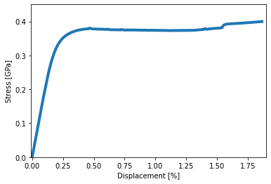

Tensile test workflow
Contents
Tensile test workflow#
Here, an examplary workflow of a tensile test is presented.
The data source is obtained from a triple store via sparql queries.
Then the elastic modulus is calculcated based on the given stress-strain data.
The calculated elastic modulus is returned to the triple store.
Authors and Contributors : Muhmmad Hassani, Jannis Grundmann, Ahmed Aslam, Jörg Schaarschmidt, Tilmann Hickel
Importing and defining project from the custom defined module#
from pyiron_tensile_test import Project
pr = Project('test_tensile_job')
pr.remove_jobs(silently=True)
Creating a job of type tensile test#
job = pr.create.job.TensileJob(job_name='tensile_job')
Defining the sparql endpoint and query for data source#
job.endpoint = 'http://localhost:8000/api/jena/S355/sparql'
download_url = job.query_data_source(test_name='Zx1')
download_url
'http://microservice_dbdocker:27777/api/S355_SteelSheet/S355_n2c.ipynb/804a2653db074a088c97832f'
download_url = download_url.replace("microservice_dbdocker", "127.0.0.1")
Obtaining the experimental dataset#
job.get_dataset(url=download_url)
job.experimental_json
| Data Resource | Object | Tensile Test | dataseries | |
|---|---|---|---|---|
| has data resource location | http://microservice_dbdocker:27777/api/S355_SteelSheet/S355_n2c.ipynb/804a2653db074a088c97832f | NaN | NaN | NaN |
| hasIdentifier | dataresource_canon | obj | NaN | NaN |
| supplied object identifier | NaN | Zx1 | NaN | NaN |
| Material | NaN | NaN | S355 | NaN |
| executed by | NaN | NaN | [J. , M. (S., J.)] | NaN |
| has data resource | NaN | NaN | [{'Data Resource': {'has data resource location': 'http://microservice_dbdocker:27777/api/S355_SteelSheet/S355_r2n.ipynb/0c7e18fcc77d44b68043bb6d', 'hasIdentifier': 'dataresource_native'}}, {'Data... | NaN |
| has generated object identifier | NaN | NaN | Zx1 | NaN |
| has measured maximum force | NaN | NaN | {'unit': 'Kilonewton', 'value': 62.006923703333335} | NaN |
| has measured modulus of elasticity | NaN | NaN | {'unit': 'Gigapascal', 'value': 194} | NaN |
| has measured original diameter | NaN | NaN | {'unit': 'Millimetre', 'value': 5.992} | NaN |
| has measured parallel length original width | NaN | NaN | {'unit': 'Millimetre', 'value': 20.131} | NaN |
| has measured temperature | NaN | NaN | True | NaN |
| has measured testing rate | NaN | NaN | {'unit': 'Millimetre Per Second', 'value': '0,536'} | NaN |
| has measured thickness after fracture | NaN | NaN | {'unit': 'Millimetre', 'value': 3.52} | NaN |
| has nominal original gauge length | NaN | NaN | {'unit': 'Millimetre', 'value': 50} | NaN |
| has nominal temperature | NaN | NaN | {'unit': 'Degree Celsius', 'value': 20} | NaN |
| has output object | NaN | NaN | [{'Object': {'hasIdentifier': 'obj'}}] | NaN |
| has supplied identifier | NaN | NaN | AG Ontologie Zugversuch Zx1 | NaN |
| Zx1.csv | NaN | NaN | NaN | {'data': [[0, 0, '0,25459', '0,05855'], ['0,1', '0,00104', '0,2551', '0,05854'], ['0,2', '0,00284', '0,25807', '0,0586'], ['0,3', '0,00544', '0,26516', '0,05864'], ['0,4', '0,00888', '0,28904', '0... |
Extracting stress and strain data from the dataset#
job.extract_stress_strain()
job.plot_stress_strain()

Calculating the elastic modulus#
job.run()
The job tensile_job was saved and received the ID: 5
job.output.elastic_modulus
181.58485412597656
Return the calculated value to the triple store#
job.update_triple_store(test_name='Zx1')
results = job.verify_update()
Verifying the hdf5 file storage#
job_load = pr.load(job.name)
job_load.output
DataContainer({
"elastic_modulus": "181.58485412597656"
})job_load.input['test_name']
'Zx1'